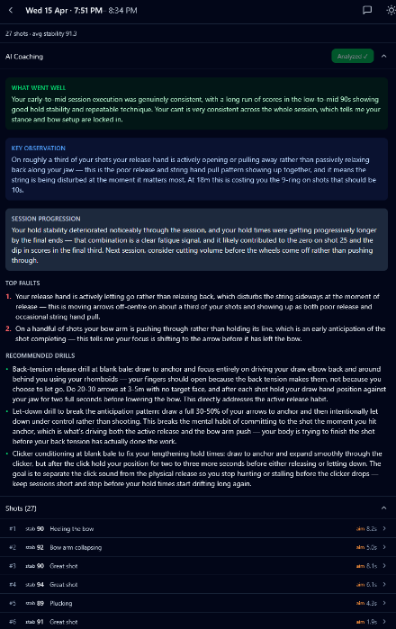
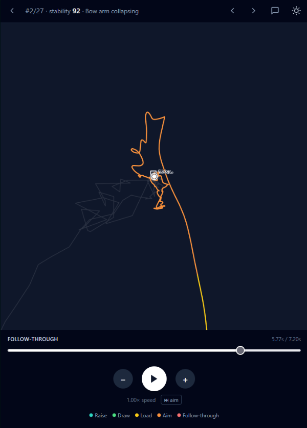
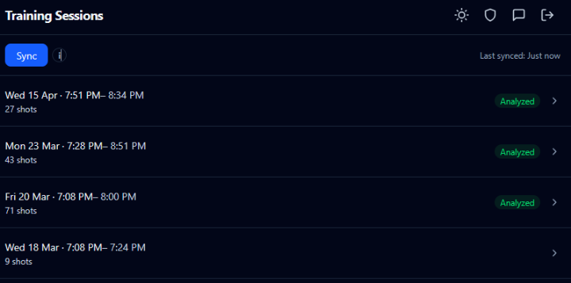

Philip Choi · unphiltered.dev
Philip Choi
Vibe shooter, vibe coder.
Kyudo · Shodan
Currently building
mantis‑analyzer — a small AI coach for the archery range.
It watches a shot — grouping, form, release — and writes back notes the way a patient coach would. Python and FastAPI on the backend, SvelteKit on the front, Claude for the read. It's the one project I'm spending time on right now, which is convenient: it sits squarely at the crossing of the two things I do.
I write code. Then I go shoot. Then the shots become data, the data becomes code, and the code quietly makes the shots better.


